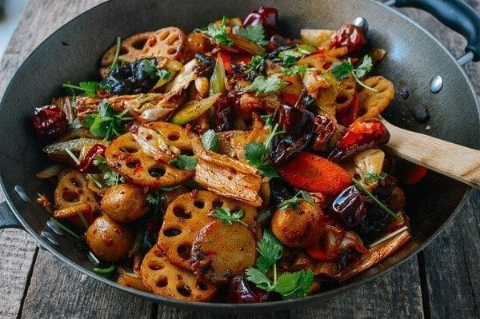

Ma La Xiang Guo
Ingredients
- 3 celery stalks (thinly sliced)
- 2 carrots (thinly sliced)
- 2 potatoes (sliced)
- 2 cups rehydrated wood-ear mushrooms (rinsed and drained)
- 3 long pieces of rehydrated tofu bean threads (drained)
- 4-6 shiitake (rehydrated if using dried shiitake mushrooms, washed and sliced)
- a handful of sliced lotus root
For Spice-Infused Oil
- 1/3 cup oil (80 ml)
- 3 star anise
- 2 tablespoons Sichuan peppercorn
- 1 tablespoon fennel seeds
- 1 black cardamom
- 1 cinnamon stick
- 3 bay leaves
- 1 whole nutmeg
- 1 large dried orange peel
- 2 pieces dried ginger (or 5 slices of fresh ginger)
- 1/4 cup dried red chili peppers (keep them whole to avoid the dish being too hot)
For the Rest of the Dish
- 2 tablespoons spicy red bean sauce
- 2 tablespoons hot pot soup base sauce
- 6 slices ginger
- 8 cloves garlic (smashed)
- 3 shallots (sliced)
- 1 cup dried red chili peppers (keep them whole to avoid the dish being too hot)
- 3 scallions (chopped)
- 1/4 head cabbage (sliced)
- fish balls (optional)
- 2 tablespoons Shaoxing wine
- 1 tablespoon sugar
- salt
- a handful of chopped cilantro
How to Make this Ma La Xiang Guo
-
First, bring a pot of water to a boil, and blanch all the vegetables
(potatoes and carrots will take slightly more time),
then transfer to an ice bath.
Drain thoroughly and set aside.
-
Heat the oil in a wok over low heat, add all the spices, and let them infuse for 20 minutes,
until all the spices start to brown.
Turn off the heat, and use a slotted spoon to scoop out
all of the spices, keep the oil in the wok.
-
Turn the heat back on low to medium, add in the hot bean sauce,
hot pot soup base sauce, ginger, garlic, and shallots.
Cook for a couple of minutes until the oil turns red,
taking care not to burn the sauce.
-
Now add in the dried chili peppers, scallions, and cabbage. Stir and mix everything for 2 minutes.
-
Stir in the fish balls and all the blanched vegetables, adding in the shaoxing rice wine, sugar and salt.
Stir-fry and mix everything well for two minutes.
-
Transfer to a serving plate (or serve right from the wok), and sprinkle with chopped cilantro.
Serve with plenty of steamed rice.